从江户时代到明治时代，日本人独自研究并发展起来的数学即“日本数学”。
在江户时代，日本出版了吉田光由的《尘劫记》、关孝和的《发微算法》等很多优秀的日本数学书籍。日本数学书不只在私塾里作为教科书使用，在普通百姓中也广为流传，掀起了一股日本数学的热潮。
这次我们选取的是京都数学家村井中渐的《算法童子问》这本日本数学书。
下面我们就来挑战一下书中介绍的“大原卖花”的问题。虽说是“面向儿童”的问题，却相当棘手。
Q 在京都大原的村子里，每天都会有一个女子来卖花。有一天，一个人问她卖的什么花，她说有“桃花、梅花、山茶花”，于是这人将这三种花都买了下来。本以为第二天她还会卖同样的花，可是没想到这次她带来了“桃花、梅花、柳枝”。似乎女子家里有“桃花、梅花、山茶花和柳枝”四种花，她每天会从里面选择三种拿来卖。
假设每种花被选到的概率都是均等的，而且顺序都是固定的，那么，从买到“桃花、梅花、山茶花”的组合之后过几天才能再买到相同的一组花？
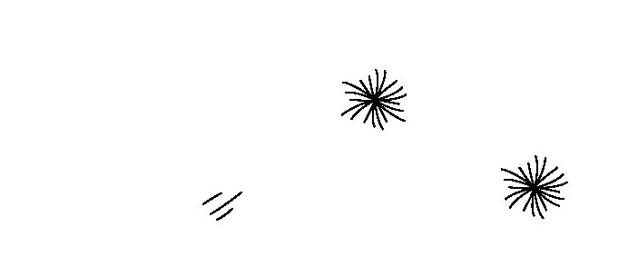
在数学中，将“几个不同的物体不按顺序取出的选择方法”称为“组合”。所以，“大原卖花”的问题其实是组合问题。
我们先来想一想，从四种花“桃花、梅花、山茶花、柳枝”中选出三种，一共有多少种组合。
如果一个一个来选“被选中的花”，势必会非常辛苦。因此，我们要转换思想，来关注“被留在家里的花”。“从四种花中选出三种”跟“把某一种留在家里”是同样的意思。这样，我们应该思考的是“把哪种花留在家里”。
请参看下页图中画了“×”的框。花共有四种，由此得知留在家里的花共有四种选择。
所以从四种花中选出三种的方法也是同样的数量——也就是四种方法。因此，花的组合每四天就会重复一次，答案即“四天后”。
向这样的问题发起挑战时，我们常常会下意识地从“被选出的花”下手，这样一来，我们需要花很长的时间才能找到答案，同时还要担心自己有没有“漏选项”。但如果将目光转向“留在家里的花”，我们就可以快速轻松地解决问题了。
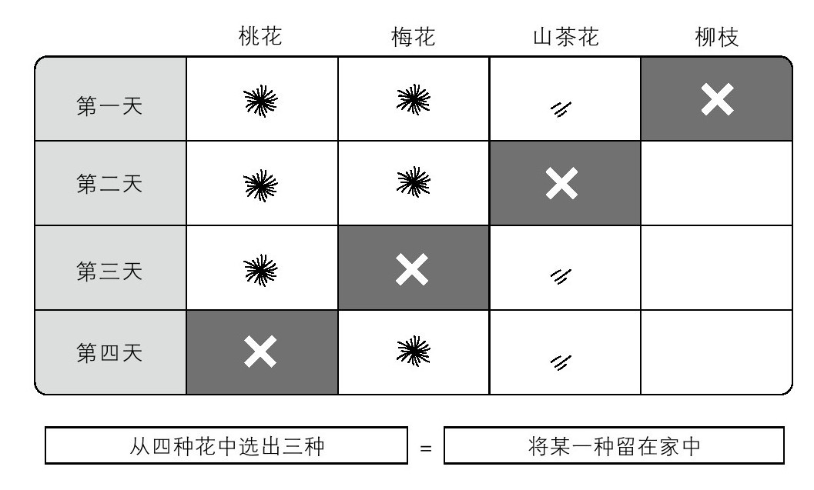
选择的方法
这种“逆向思维”就是数学的妙趣所在。
再让我们来挑战一道江户时期日本数学书《尘劫记》中介绍的组合问题。读者朋友们不用计算器可否解开这道题？又能否将答案流畅地读出来呢？
Q 某个岛上有999片沙滩，每片沙滩上有999只乌鸦，每只乌鸦叫了999声。那么，所有的乌鸦一共叫了多少声？
因为999片沙滩上各有999只乌鸦，所以乌鸦的总数为999（片沙滩）×999（只）=998001（只）。每只乌鸦叫999次，所以乌鸦叫声合计用998001（只）×999（次）来计算。
999×999×999=998001×999=997002999
因此答案是9亿9700万2999次。
这个问题被称为“算乌鸦”。江户时代的人们很喜欢以现实中不存在的问题为主题来提出问题，只享受计算本身的乐趣。将所有复杂麻烦的计算都推给用计算器和电脑的现代人，不妨也来体验一下手算的乐趣。
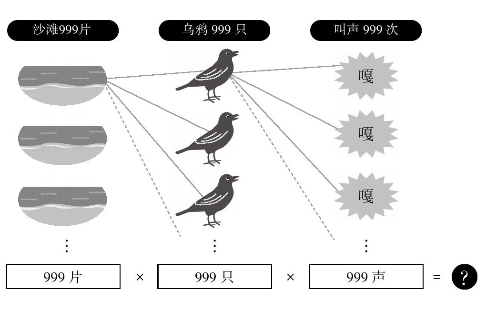
乌鸦一共叫了多少声
最后我来给大家出一道“现代算乌鸦”的问题。
Q 一个人有99顶帽子，99件上衣，99条裤子，99双袜子，99双鞋。这个人一共可以搭配出多少套服装。
这个问题的思考方法与“算乌鸦”一样。所求的组合数为99×99×99×99×99。
所以答案是95亿990万499套。
如果有这么多衣服，每天想要穿出不同的搭配可以穿几年？
用9509900499÷365，得到的答案是，大约2600万年每天都可以穿不同的服装。
如果你一个月的时间里每天都穿不同的服装……那么每样服饰只需要两件就足够了。
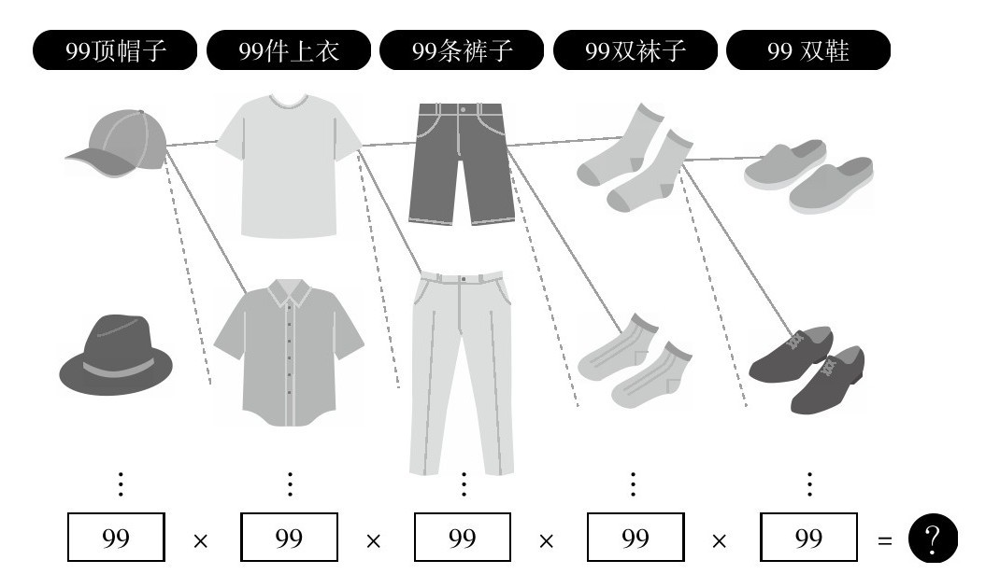
服装的组合有多少种
江户时代的武士们会骑马赶路。在日本数学中，有一些问题是为了那个时代而独创的，其中就有“骑马运算”。
请大家看一看《尘劫记》中提出的问题。
Q 甲、乙、丙、丁四人要旅行6里地。马只有三匹，所以有三个人骑马，剩下一个人徒步。在路上几个人轮换着徒步前进，让四个人骑马的距离相等，那么每个人骑马的距离能有多长？
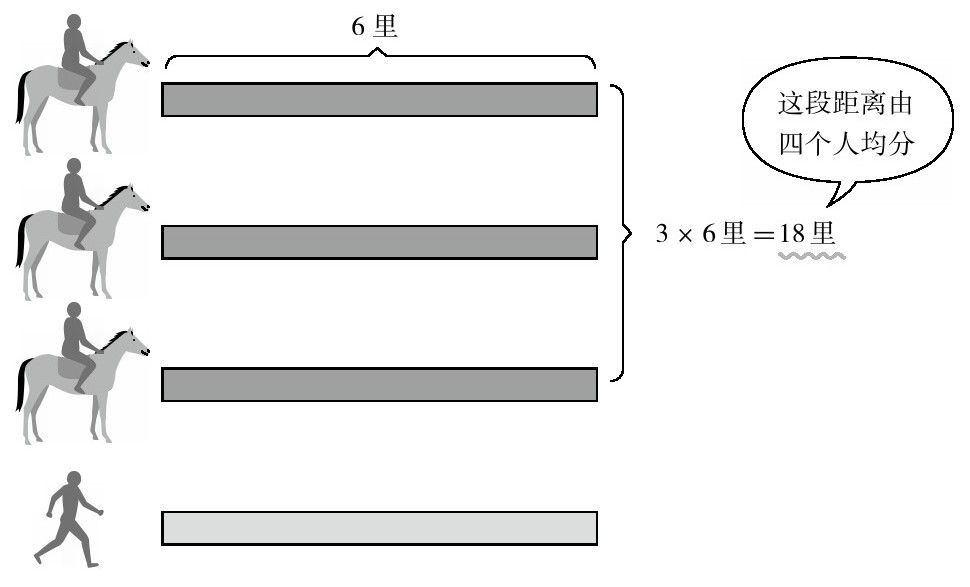
徒步的人怎么交换？
首先想一想骑马的距离一共能有多长。三匹马要走6里的距离，3×6=18，可以得出骑马的距离总计18里。这个距离由四个人平分，18÷4=4.5，我们可以得知每个人可以骑马的距离为4.5里。也就是说，每前进1.5里就应该更换一次徒步的人。
这个问题能够成立的条件是马前进的速度与人类相同。现代人和车不可能以同样的速度在同一条路上行进，因此想必大家会觉得这个问题没有什么现实意义。
但是“骑马运算”的思考方式对于现代社会的“行程问题”也很有用。比如，制定勤务表时，这种运算方法是谋求高效作业的一种有效手法。
Q A、B、C在一家超市里打工。平时需要两人同时出勤，如果要三人出勤的天数相同，那么一个月每人要出勤多少天？设定每个月30天，没有休息日。
A. 20天
我们先来思考三人出勤的总数。一般每天需要两人出勤，即2×30=60，出勤总天数为60天。由于有三人工作，每个人出勤的天数为60÷3=20，得出每人工作20天。
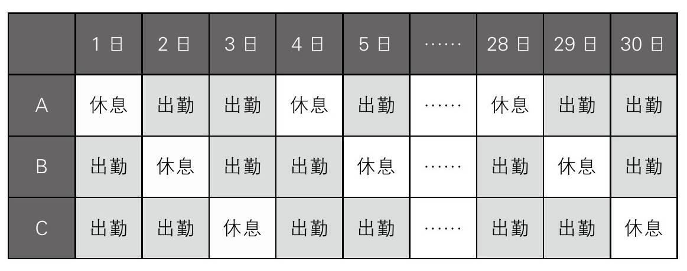
出勤表（每三天休息一次）
这个出勤表中30天的时间里每人有20天上班，剩下的10天休息。
这道问题记录在江户时代中期1743年出版的日本数学书《勘者陪伴书籍》中，是一道用到了棋子的问题。
Q 给朋友30个棋子，让他放到自己看不见的地方，按照以下规则摆放。
一次只能摆1个或2个，摆放时要喊一声“嘿”。
于是这位朋友边“嘿、嘿”地喊着，边摆放棋子。到30颗棋子都摆好为止，他共喊了18声。请问，他一共有几次摆了一个棋子，有几次摆了两个棋子？
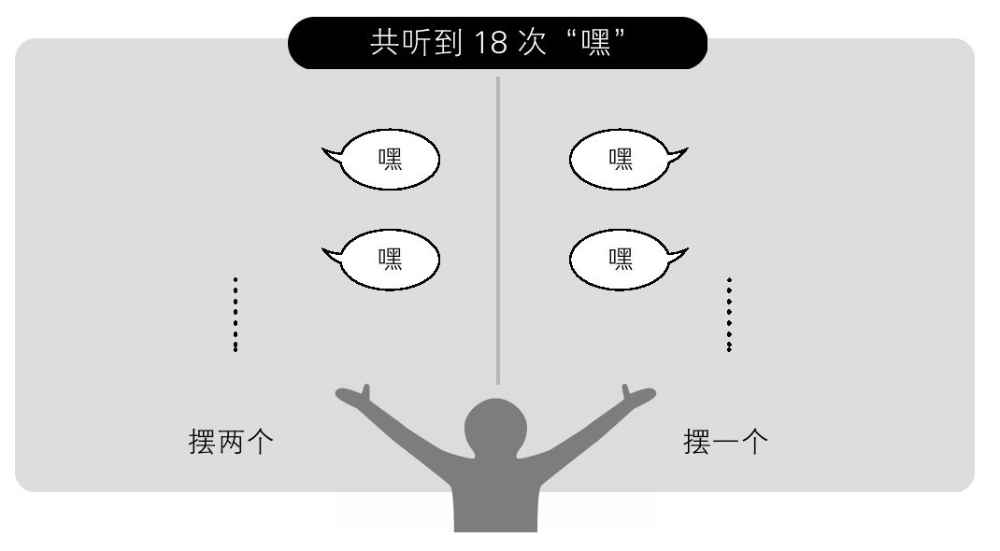
喊的同时摆放一个或两个棋子
这就是“喊出嘿！嘿！”的问题，这个名字正是从“嘿！嘿！”这种有趣的叫声中得来的。这是多么有趣的一个名字啊。
知道的只有“棋子数”和“喊声数”。
一开始感觉获得的信息太少了，可是只凭这些信息还是可以解开这个问题。
这个问题有日本数学的解法和方程式解法，不管哪种方法都可以解开。
但是日本数学解法可以让没学过方程式的小学生也能回答这个问题。
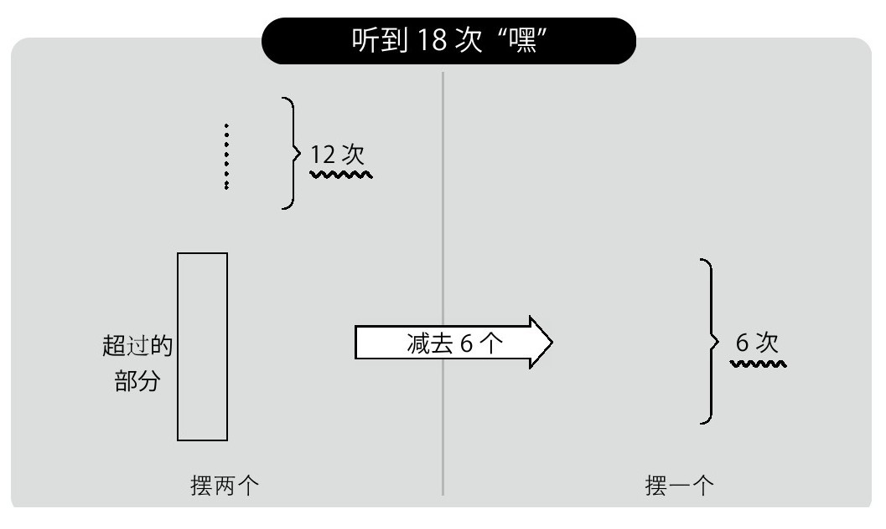
如果每次都摆两个棋子……
假设每次都摆两个棋子，思考一下棋子的总数。一共听到了18次“嘿”，2×18=36，可以得出一共摆了36个棋子，可是一共只有30个棋子，用36-30=6，得出超出了6个棋子。
于是我们减少“摆两个棋子的次数”，用“摆一个棋子的次数”来置换。每置换一次，棋子的数量就减少一个。也就是说，这样的置换总共需要进行6次。
于是得出摆一个棋子的次数是6次，摆两个棋子的次数为18-6=12，共12次。
也可以用一次方程式来解这个问题。
“听到18次喊声”也就是说一共“摆放了18次棋子”，将摆放一个棋子的次数设为x，则摆放两个棋子的次数为18-x。
用x来表示摆放的棋子数，如下所示。
x×1+（18-x）×2=30
x-2x=30-36
x=6
另外还可以用并列方程式来解答。
将摆放一个棋子的次数设为x，将摆放两个棋子的次数设为y，组成一个并列方程式。
x+y=18——①※听到“嘿”的次数
x+2y=30——②※棋子的总数
②-①得出y=12——③
将③代入①，得出x=18-12=6
通过日本数学，数字的世界变得更加开阔了。请大家务必跟家人和朋友试试看这个“喊出嘿！嘿！”的数字猜谜游戏。用硬币和糖果来代替棋子一样非常有趣。
日本数学中的问题就像游戏一样。
将数学当作一种娱乐，日本数学的真谛就在于此吧。
“日本数学风潮”曾在江户时代引起轩然大波，相信现在也一定可以俘获很多人的心。
日本数学是传递数学魅力的一种优秀手段不是吗？
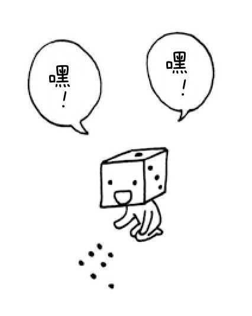
这次我们来挑战江户时代初期1627年出版的日本数学书《尘劫记》中记载的“药师算”问题。
Q 将棋子摆成正方形。只摆边，里面不用摆。接下来只留下右侧一条边的棋子，剩下的棋子都沿着右侧这条边来摆放。
如果摆完后左侧还剩下3个棋子，那么一共有多少个棋子？
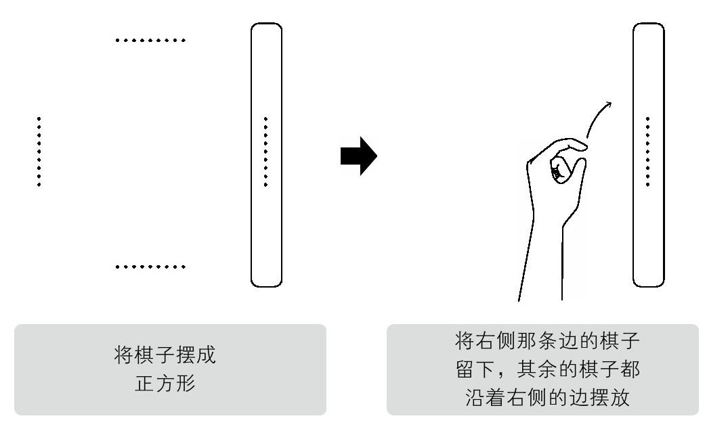
一共有多少个棋子？
首先用现代的一次方程来试着解解看，然后再用江户时代的公式来解答。这样就可以知道为什么这个问题叫作“药师算”。
将一边的棋子数设为x，棋子的总数为4x-4个。“-4”是因为四个角的棋子不能数两遍。
“沿着右侧的边摆放”是指“跟右侧的边同样数量（x个）一排排摆放”，所以摆放后棋子的总数是3+3x个。
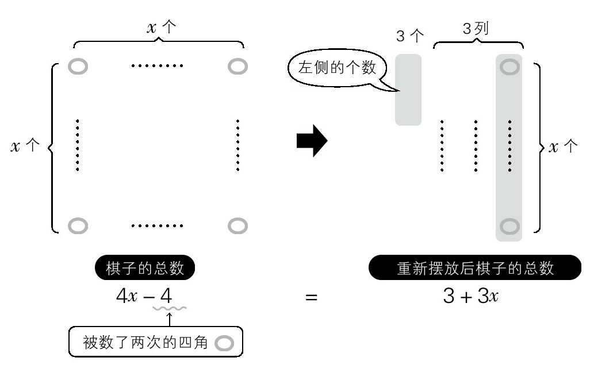
将一边的棋子数设为x个，组成一个一次方程
棋子的总数与重新排列前没有变化，所以可以用一个一次方程式来表示。
4x-4=3+3x
x=7
得出棋子的数量为4×7-4=24个。
从这个解法中我们可以知道，因为棋子的总数是4x-4个，所以重新排列后不可能超过4列。
也就是说，重新排列后的形状一定是“左侧的个数+3列”。
这里再让我们思考一下左侧的个数。从刚才的算式中可以推出：
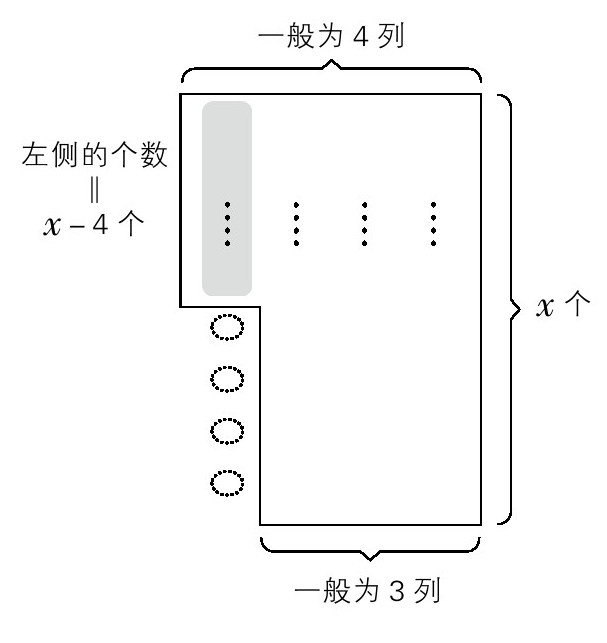
请注意左侧剩下的个数
4x-4=左侧的个数+3x
左侧的个数=x-4
可以得出左侧的个数为x-4个，也就是比一列中的个数（x个）少4个。让我们用这样的思考方法来挑战下一个问题。
Q 改变棋子的数量来用同样的方式重新排列，这次左侧剩下了6个棋子，此时一共有多少个棋子？
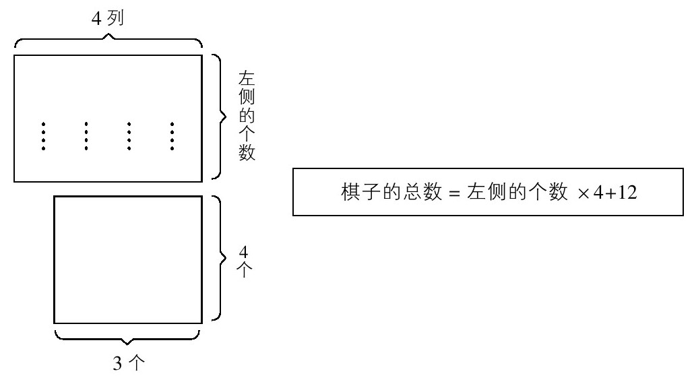
求出棋子总数的方法
请像上图所示的那样，将重新摆放的棋子分为上下部分来思考。
上部分棋子的数量为（左侧的个数×4）个，下部分棋子的数量为3×4=12个。
也就是说，棋子的总数正常来讲按照左侧的个数×4+12，即可计算出答案。
在这道问题中，左侧的棋子是6个，所以6×4+12=36，棋子的总数为36个。
说起来最开始的问题也能用这个方法轻松求解（3×4+12=24）。
为什么这个问题被称为“药师算”呢？
这与数字“12”有关。
药师如来在修行中成就“十二大愿”，与此对应设置了“十二神将”。所以，提起数字“12”就会想到药师如来。
因为重新排列后下半部分的棋子数必然是12个，所以给它取名叫“药师算”。
这样一想，解开“药师算”似乎也算有了某种功德。
在江户时代，米作为粮食的同时还是金钱。
《尘劫记》中有一道“用米来支付运米的钱”的“运费计算”问题。这个问题总有一个隐藏的骗局，需要引起大家注意。
Q 用船运送250石的米。用米来支付运费，运送100石米需要支付7石的米。如果先行从这250石中支付运费的话，需要支付多少？
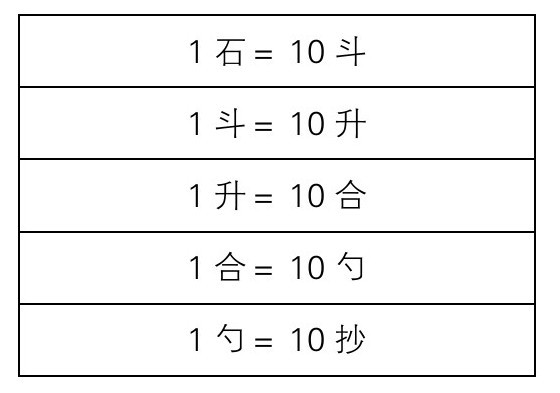
米的重量单位
1石米需要支付0.07石的运费，所以250石米需要250石的0.07倍作为运费……如果你是这样想的，那么就中了这个问题的“圈套”了。
因为作为运费的米从一开始就要先支付几石，所以实际运送的米要比250石少。也就是说，所要支付运费的是“支付运费后剩下的米”，这就是本题的骗局。
将运费设为x石。实际需要运送的米量为250-x石，产生的运费为（250-x）×0.07石，与x相等，所以可以用一次方程式来解答。
x=（250-x）×0.07
1.07 x=17.5
x=16.355140……
得出答案为16石3斗5升5合1勺4抄。
说起现代的运费，最先想到的当属出租车了。
那么让我给大家出一道现代运费计算问题。
Q A、B、C三人共乘一辆出租车回家。开到4公里处，A下了车，再开3公里后B也下了车，再接着开5公里后，C也下车了，并支付了11960日元。
如果根据各自乘坐的距离支付出租车费用的话，每个人需要支付多少钱？
每个人乘坐了多远的出租车用图来表示就清晰多了。
A乘坐了4公里，B乘坐了7公里，C乘坐了12公里。
三人乘坐的距离共计为4+7+12=23，得出23公里。
所以在出租车费中，A应该负担4/23，B应该负担7/23，C应该负担12/23。得出——
A：4/23×11960=2080（日元）
B：7/23×11960=3640（日元）
C：12/23×11960=6240（日元）
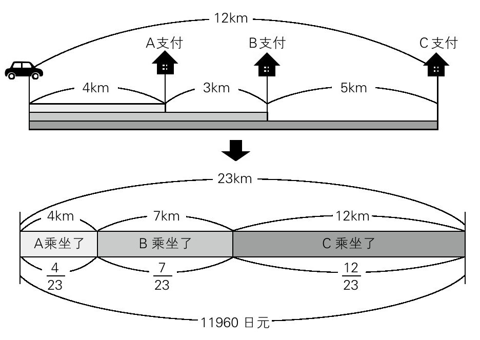
每个人根据自己乘坐的距离支付车费
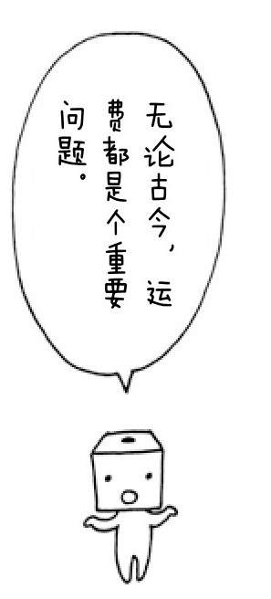
浮世绘画师歌川广重的《东海道五十三次》、十返舍一九的幽默小说《东海岛中膝栗毛》等都博得了人气，江户时代的人们似乎非常喜欢旅行。
日本数学的问题中也有以旅行为主题的《旅行者运算》。下面从《算法联系古图会大成》中出一道题。
Q 有一个人（甲）从京都到江户，每天走7里半。还有一个人从江户去京都（乙），每天走12里半。
两人同一天出发，各自走了多少里之后能够相遇？京都与江户之间的路有120里。
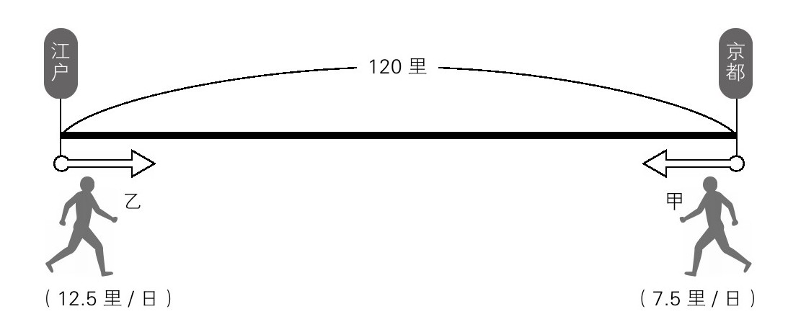
两人何时相遇？
甲和乙每天靠近的距离为“7.5+12.5=20”，即20里。京都和江户间相距120里，所以“120÷20=6”，得出两人是在6天后相遇的。
两人在6天中所走的距离：甲为“7.5×6=45”，即45里；乙为“12.5×6=75”，即75里。
请大家注意本题中使用的单位。移动距离为“里”（日本古代长度单位，1里约为3.93千米），移动时间为“日”。
现在东京—京都间的新干线不过2个半小时就到了，可是当时的旅行者每天约前进10里（约40千米），走完这段路程他们得花上几天的时间。从题目中使用的单位就能大致窥视到当时旅行者的旅行状态。
接下来是我的问题。
Q X在A地，Y在B地。A地至B地X需要20分钟，Y需要30分钟。两人朝着对方的所在地同时出发，多少分钟后相遇？
这个问题和前面的问题不同，并没有给出总距离（两地之间的距离），所以重点是将总距离想象为“1”。
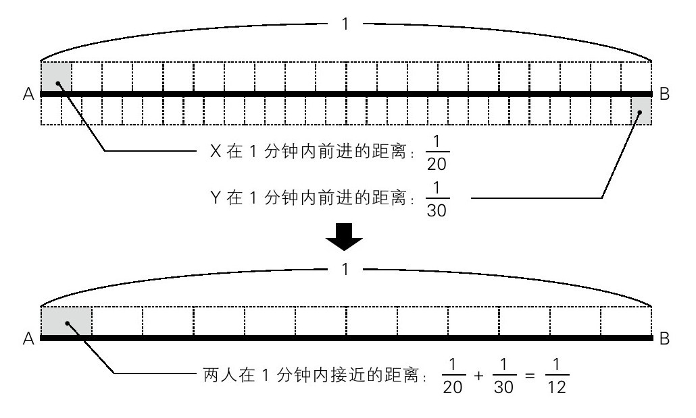
两人在1分钟内接近多少？
将A地与B地之间的距离设为1，X一分钟内前进的距离为整体的1/20，Y为1/30。
1/20+1/30=3/60+2/60=5/60=1/12
两人间的距离每分钟会缩短整体的1/12，所以两人相遇的时间为1÷1/12=12，即在12分钟后相遇。